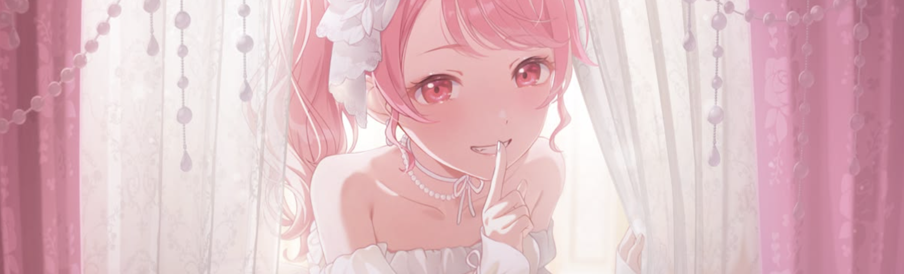
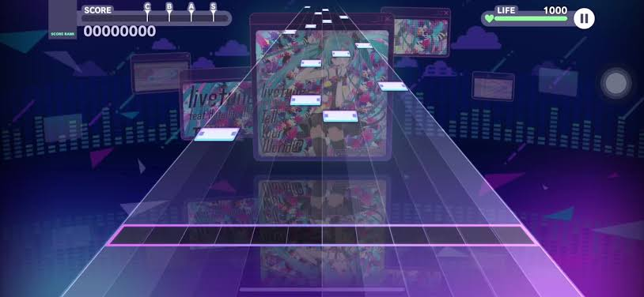

Choose a song
Pick from a wide library of Vocaloid and original songs.
01 / OVERVIEW
A rhythm game where music and characters bring different worlds together.

WHAT IS IT?
Hatsune Mike: Colourful Stage! (also known as Project SEKAI: Colourful Stage! feat. Hatsune Miku) is a mobile rhythm game.
It combines rhythm gameplay with visual-novel-style stories about groups of young people discovering their dreams, friendships and feelings.
The Virtual Singers, including Hatsune Miku, appear in the characters' mysterious Sekai worlds.
THE GAME LOOP
The main experience brings together songs, timing, team customization and story chapters.
Pick from a wide library of Vocaloid and original songs.
Tap, hold and slide notes in time with the music.
Collect character cards and form a team for your play style.
Follow the groups as they work towards their goals.

RHYTHM GAMEPLAY
Songs have different difficulty levels, so players can choose a challenge that feels comfortable. The timing of each note matters, and practice helps you become more familiar with a chart.
QUICK FACTS